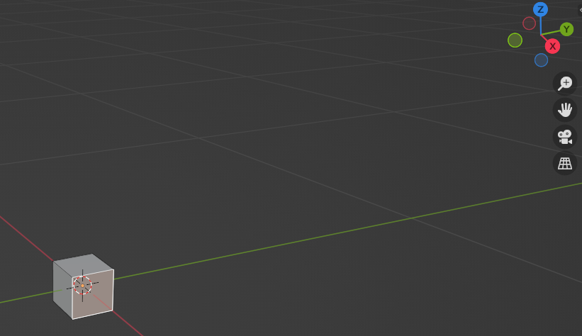
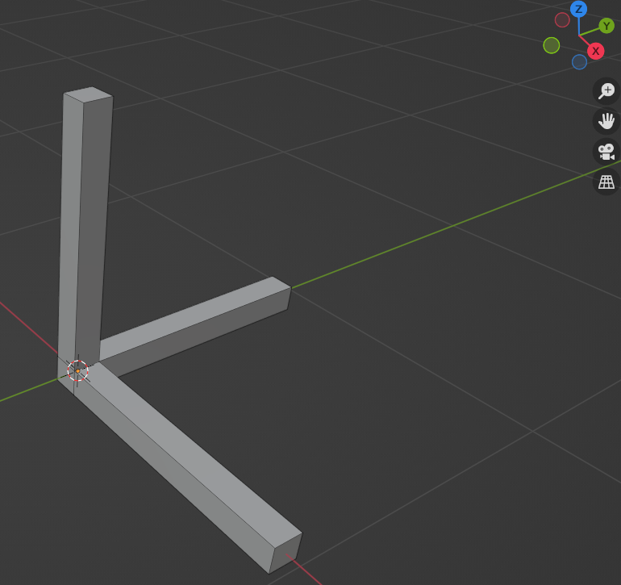

Describe your environment
There is no place like 127.0.0.1
Create a simple model
Now that we have a robot able to move in Overworld, we need to create the environment in which it will act. While the robot could sense its entire environment, it's common to assume that part of it, like the building, is known ahead. In this second tutorial, we will create this static environment.
The first step to create the environment is to get CAD models. Do not be afraid but we will thus start with a bit of CAD modelling using Blender. The goal is not to make you a Blender expert (it would be too long) but to give you a few tips to make it work properly with Overworld. Even if you do plan to create your own models, this first part could help you to understand possible bugs.
First of all, download blender and launch it.
Make a frame
When you launch Blender, a cube, a light, and a camera are in the world. As we do not need them, let's remove them. Press A (select all) then Delete.
To model with Blender, we always start with a simple primitive mesh. In our case, we will use a cube.
To make it appears, press Shift+A. A popup should appear. Go to Mesh, then select Cube.
At the bottom left, a widget has appeared with Add Cube written on it. Click on it.
Once the widget expended, you have several data about the spawned cube.
The only one interesting to us is the cube's size.
Change it to 10cm or 0.1. The cube should now be much smaller.
You can now click on the cube and we will model from it.
For the moment, we are in Object Mode, meaning that we can only change its location, rotation and scale.
To change its inner geometry, we have to pass in Edit Mode.
To do so, with the cube selected, press Tab.
The cube should look like below.
By default, in edit mode, we work with vertex. Using the icons at the top left, we can pass from vertex mode to face mode . This will all us to directly modify the cube faces. In this new mode, select the X forward face. The axis directions are always displayed at the top right.
We will extrude this face by pressing E and then typing 0.9. By doing the same with the Z forward and Y forward faces, you should get the same as below.
Add colors
That's great, we have created an axis but with color it would be nicer.
Let's stay in edit mode but with the Material Properties panel. Click on the
icon on the right.
Click on the New button then rename the created material to "white".
By clicking on the Base color color box (yes directly on the color) you can modify it and set it to a real white.
You can now press the + button to create another material.
Rename this new material to "red" and change the base color.
Do the same to create a blue and green material.
By the end, you should get the following material list.
We will now assign these colors to the different faces.
Click on one of the Z axis faces, and holding Shift, click on the others ones to select all the faces of the Z axis.
After that, click on the blue material in your material list, then press the button Assign.
If nothing has changed, with the mouse hover the modelling grid, press Z then 2 to get the material preview.
Your entire Z axis should now be blue. Do the same with the two other axes and you should get something like below.
You can finally press Tab to come back to object mode.
Selecting your model and pressing N, a new widget appears with information about our object. Here we can verify that the dimension of our object is 1m x 1m x 1m.
Export the object
Blender allows to export objects in several formats. With Overworld we mainly use OBJ but you can also use STL or DAE.
Let's start with the OBJ format. Select your object first then, on the top left, go to File > Export and select Wavefront (.obj).
Before selecting the desired folder, we have to modify some export parameters.
On the right panel, select the Selection Only option to ensure that you only export the selected objects and not an entire scene.
Then, in the transform panel, we have to change the Forward to Y and the Up to Z.
Finally, change the Path Mode to "Relative". You should get that:
You can now save the model in a "models" folder in the "overworld_tutorials" package with the name "frame.obj".
We have to note that with the OBJ format, Blander takes the world origin as the object origin. If we want to use the true object origin, we have to put its location to the world origin (i.e. X = 0, Y = 0, Z = 0 in the Transform panel that we open with N).
We will now do the same for the STL format. Select your object first then, on the top left, go to File > Export and select Stl (.stl).
Once again, before selecting the desired folder, we have to modify some export parameters.
On the right panel, select again the Selection Only option to ensure that you only export the selected objects and not an entire scene.
Then, in the transform panel, change also the Forward to Y and the Up to Z.
You should get that:
You can now save the model in a "models" folder in the "overworld_tutorials" package with the name "frame.stl" and we are done!